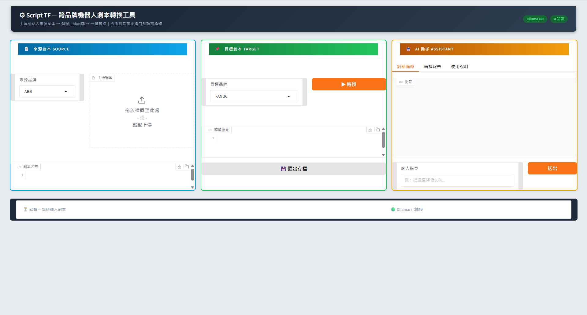
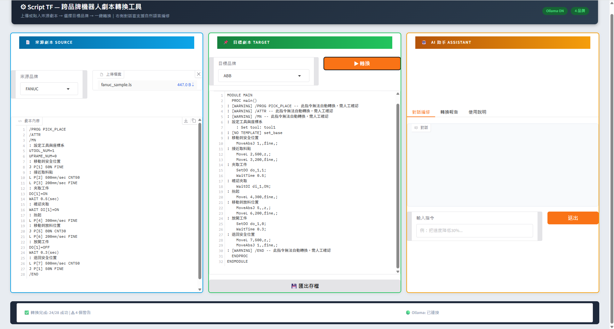
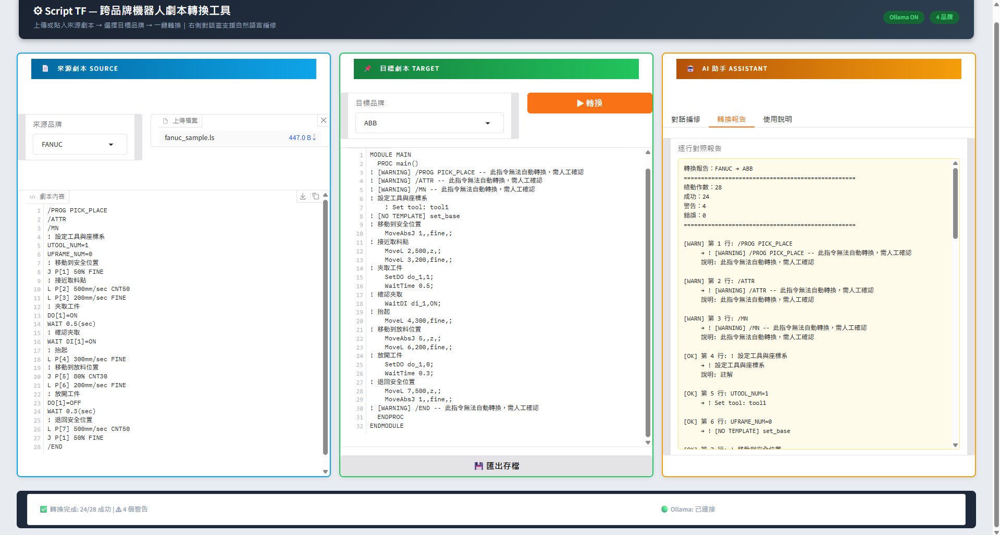
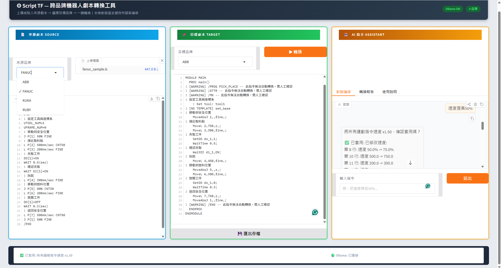

⚙
Script TF
跨品牌機器人劇本轉換工具
離線運作的工業機器人程式轉換平台
規則引擎精確轉換 × 本地 LLM 對話式編修
FANUC / ABB / KUKA / RUBY
完全離線・資料不外流
AI 自然語言編修
按 → 或空白鍵開始（右下角 T 鍵可啟動 3 分鐘計時）
0:20
為什麼需要 Script TF？
每家機器人品牌都有自己的程式語言——換品牌、多品牌並存時，
工程師得逐行人工改寫，慢且容易出錯。
| 品牌 | 語言 | 副檔名 |
|---|
| FANUC | TP / LS | .ls .tp |
| ABB | RAPID | .mod .rapid |
| KUKA | KRL | .src .krl |
| RUBY (PMC) | Ruby Script | .script .rb |
來源劇本Parser 解析
→
IR 中間表示層14 種標準動作
→
目標劇本Emitter 生成
＋
AI 對話編修規則式 + 本地 LLM
0:45
三欄式操作介面，一眼看懂
- 左欄：上傳或貼入來源劇本，依副檔名自動偵測品牌
- 中欄：選目標品牌，一鍵轉換、一鍵匯出
- 右欄：AI 助手——對話編修／轉換報告／使用說明
- 狀態列即時顯示轉換結果與 Ollama 連線狀態

瀏覽器開啟 localhost:7860 即可使用，無需安裝客戶端
1:10
一鍵轉換：FANUC → ABB 實例
- 447 bytes 的取放料程式，秒級完成轉換
- 速度、I/O、等待、註解……全部對應到目標語法
- 無法自動轉換的指令明確標註 WARNING，絕不靜默丟失
- 狀態列統計：24/28 成功、4 個警告，風險一目了然

左：FANUC LS 原始碼 右：轉出的 ABB RAPID，警告以註解內嵌
1:35
逐行對照報告：可追溯、可稽核
- 每一行標註 [OK] / [WARN]，原始碼與轉換結果並列
- 警告附原因說明，工程師知道該人工確認哪幾行
- 總計摘要：總動作數／成功／警告／錯誤
- 對安全敏感的產線程式，轉換過程全程留痕

「轉換報告」分頁：28 個動作、24 成功、4 警告、0 錯誤
2:00
用一句話改劇本
- 輸入「速度提高 50%」，逐行自動套用並回報修改明細
- 支援：調速、刪行、插入等待／I/O、解釋指令……
- 規則引擎解析的指令直接執行，不需要網路
- LLM 產生的操作需人工確認才套用——防止劇本內容的提示注入

第 8 行 50%→75%、第 10 行 500→750……修改結果即時反映在中欄
2:25
本地 LLM：能討論、能建議，資料不出廠
- 問它「可以怎麼優化？」——分析劇本、給出具體建議
- 後端是 Ollama + gemma4，跑在自己的機器上，完全離線
- 製程程式屬敏感資產，不需上傳任何雲端服務
- 沒裝 Ollama？規則式指令照常可用，功能優雅降級
AI 助手根據來源劇本提出減少指令數量、統一命名等建議
2:45
易擴充、易部署，今天就能用
🧩 新增品牌零門檻
簡單品牌只要一份 definition.yaml；
複雜語法再加 Python plugin（Parser / Emitter）。
🚀 部署方式
Docker 容器化，開機自動復活。
✅ 品質保證
48 個自動化測試全數通過；
轉換警告、LLM 操作確認機制雙重把關。
📦 完整文件
內附使用手冊與 Docker 部署 SOP，
從安裝到疑難排解一應俱全。
讓機器人劇本移植，從「幾天」變成「幾秒」。
謝謝聆聽！